Digital works / 21 works
FIGURES
Colour & body
Green figures, loose gestures and fields of colour. A series exploring pose, proportion and the space around the body.

Standing figure against pink and orange034

Standing figure against coral and violet032

Seated figure against orange lettering035
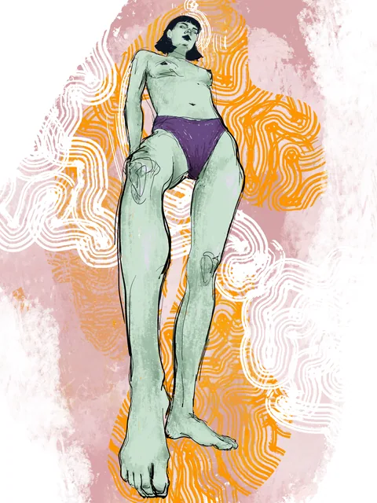
Standing figure with pale patterned lines036
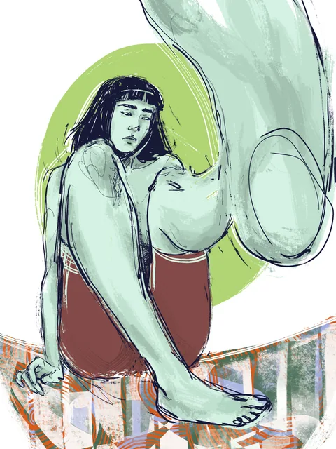
Seated figure and enlarged hand041 +
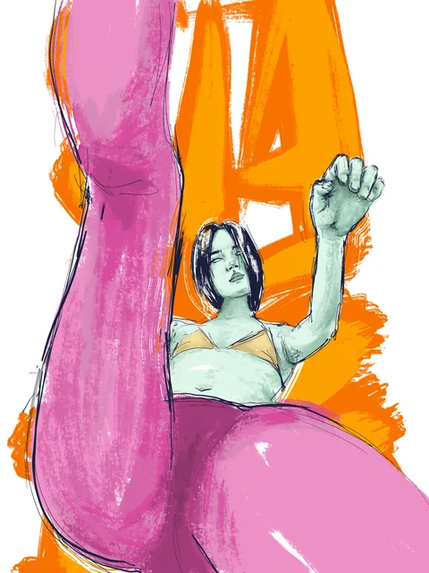
Reclining figure with raised hand038
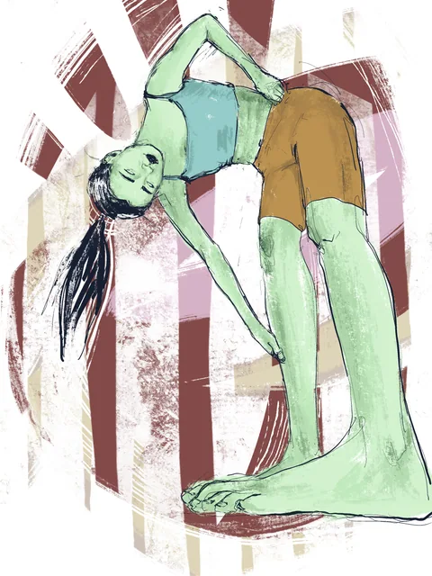
Leaning figure in teal and ochre039
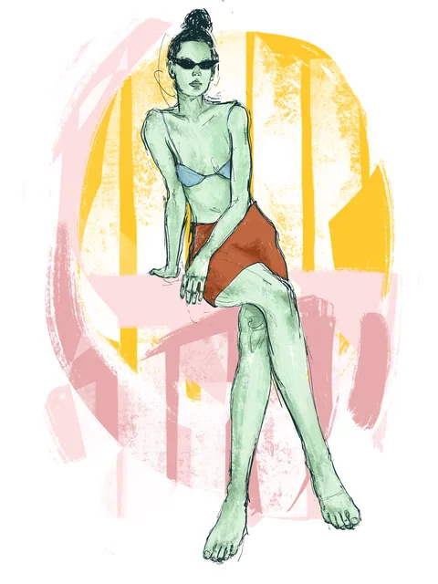
Seated figure with sunglasses042 +
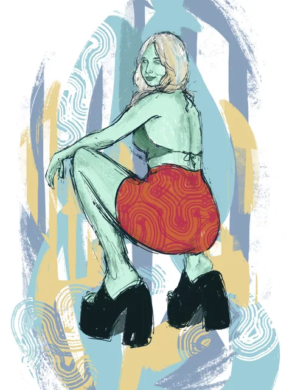
Crouching figure in red043
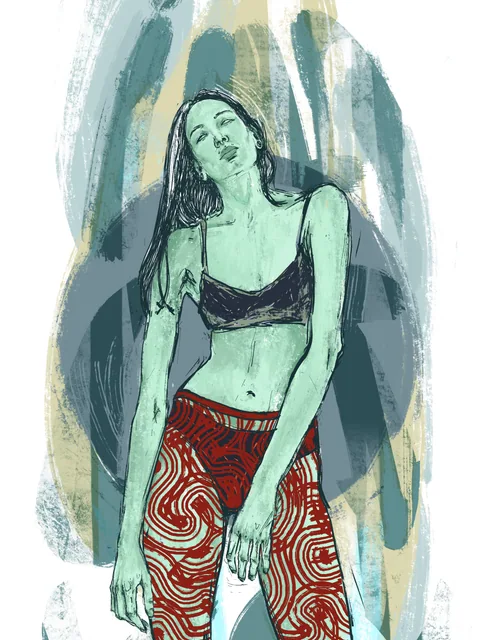
Standing figure in patterned trousers044
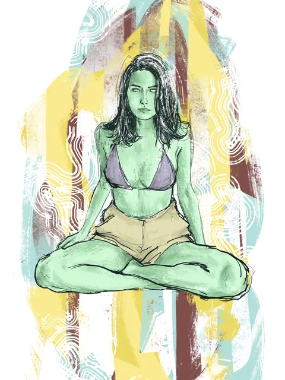
Cross-legged figure in yellow and violet045
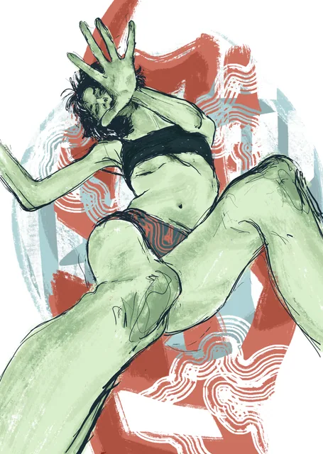
Reclining figure behind a raised hand046 +
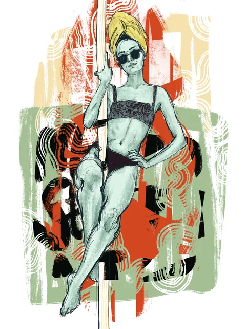
Seated figure in a patterned chair048
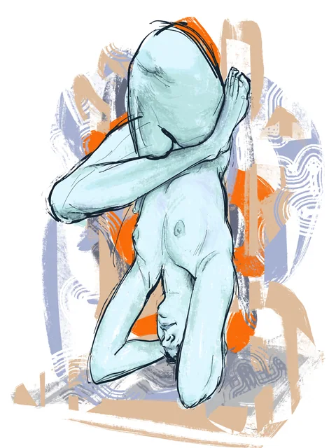
Curled figure in blue052
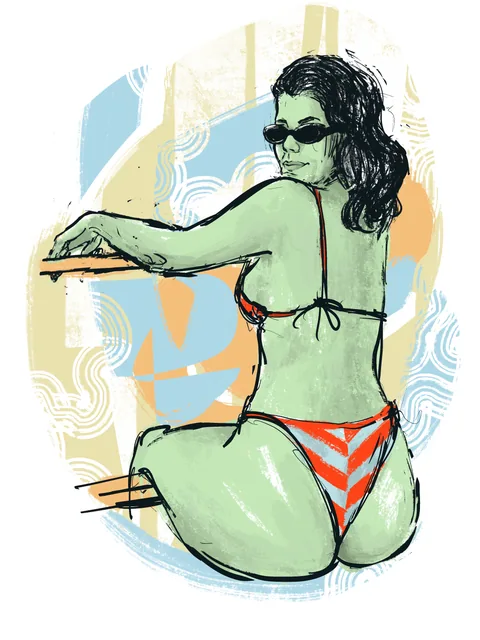
Seated figure in a striped swimsuit053
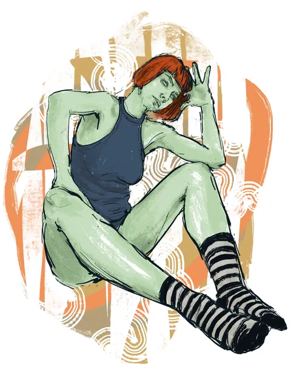
Seated figure with striped socks054
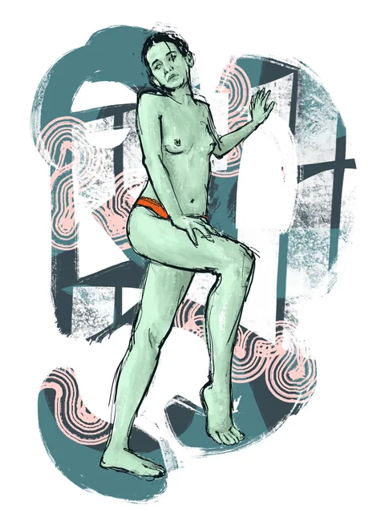
Figure holding a bent leg055
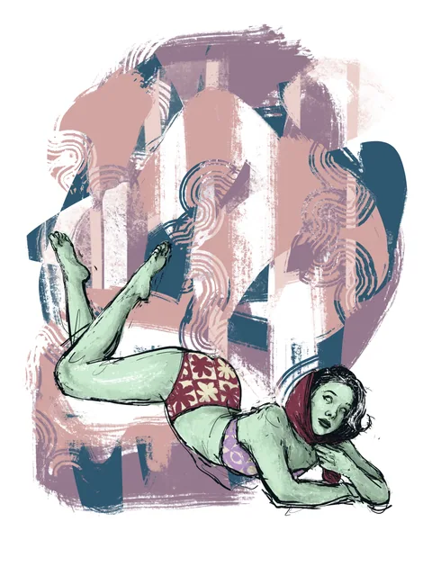
Reclining figure on violet056
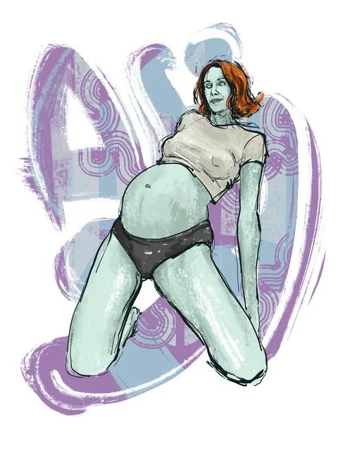
Reclining figure on violet and turquoise064
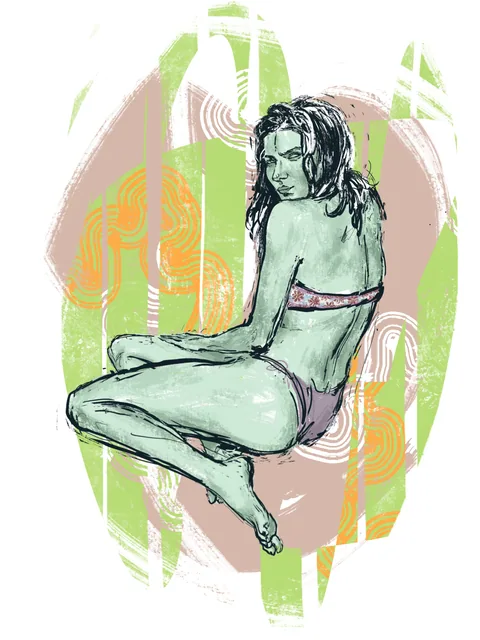
Seated figure against a green field065

Reclining figure with graphic lettering033
Keep looking